In the era of deep learning and data-driven approaches to computer vision, there’s a certain beauty to classical computer vision techniques. This post is about one such idea.
Recently, as part of some work, I’d been exploring the idea of warping pixels in 2D images using 3D mesh information. As a part of this, I investigated using spring elements, a finite element method (FEM), to come up with a fast efficient solution. This technique is also used in computer graphics to simulate the movement of fabrics in 2D.
Hence, I’ll be going over how I implemented this in Python. This will be much more barebones than the actual use-case and of course, the actual implementation; however, I still thought it was pretty cool! So here goes.
Okay, so I’ve mentioned spring elements. But what are they? Taking a step back, what even are “elements” and where do they come from? Essentially, this term comes from the a popular method which is used to solve differential equations ranging from those in structual analysis for buildings to those in heat transfer and fluid flow. It’s essentially a numerical approach to solving contrained (having boundary conditions) partial differential equations in multiple (2-3) dimensions.
Typically, this involves the creating of a “mesh” of some sort, discretizing the 2D space in an image and producing the numerical solution for some kind of metric on these discrete points considering that some of these points are constrained. The way that we discretize our space is what the “element” is. For instance, if we divide our space into mesh made of squares, we have square elements. In our case, we use triangular elements and solve for displacements along the vertices of these triangles.
And finally, why do we call it “spring” elements? Well, once we’ve divided our space into triangular elements, we must ask ourselves an important question. How are the vertices related to one another? For instance, for a solid object, it might be a good idea to say that the vertices are rigid relative to one another. In other words, since the overall geometery of the object should not change, points are not allowed to move closer or father away from its neighbours. However, suppose you wanted to simulate a stretchy material (like most fabrics). In this case, we want points to be able to stretch away from each other, but still have a force pulling them back to it’s original position. This is exactly how springs work! They produce a restorative force proportional to the change in length of the spring (Hooke’s Law).
\[F_s = -k * \Delta x\]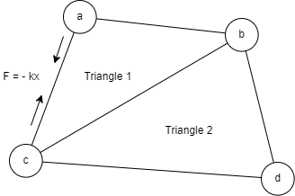
A triangle element system where the vertices are related by Hooke’s Law.
So, now we know what spring elements are. Let’s get into creating one for images. We’ll be taking a pretty basic example. We’ll start by taking a random clothing texture as below. I’ve taken one with a little bit of shadows on it so that we can actually see what happening as we build the system out.
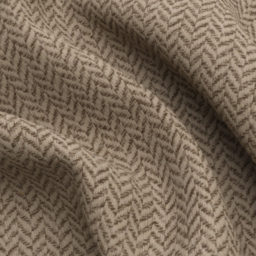
Now we’ll define an arbitrary set of constrained points. Of course, usually this corresponds to some sort of mask which will stay constant over time. However, for illustrative purposes, I’ve taken a sample ring which will move from the top-left corner of the texture to the center of it.
| \(I^t\) | \(I^{t+1}\) |
|---|---|
| 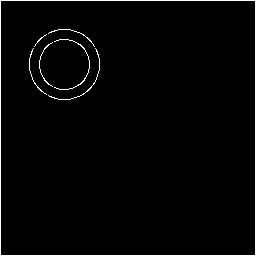 | 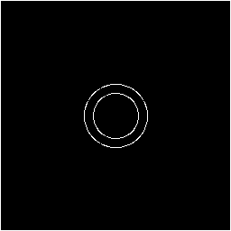 |
| 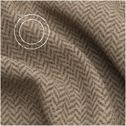 |
As can be seen, we’ve copied over the texture within the ring from the top-left of the image to the center. Ideally, what we’d want is for the rest of the pixels in the image to move along with it; behaving like a fabric in the process.
To do this, we have to do the following things in order.
With these steps in mind, let’s get to building it out.
We begin by defining our constrained/free points along with some other notation for convenience.
\[\begin{aligned} F &= \{\text{free vertices}\} \nonumber \\ H &= \{\text{constrained non-boundary vertices}\} \nonumber \\ B &= \{\text{constrained boundary vertices}\} \nonumber \\ C &= H+B \nonumber \\ V &= F+C \nonumber \\ S_{ab} &= \{\text{spring going from vertex $a$ to $b$}\} \nonumber \\ P(V) &= \text{current position of vertex V} \nonumber \\ P_{0}(V) &= \text{initial position of vertex V} \nonumber \\ K_h &= \text{spring constant for F-H and H-H connections} \nonumber \\ K_f &= \text{spring constant for F-F connections} \nonumber \end{aligned}\]To illustrate things, lets take a simple system as shown below. Here the points marked in blue define our constrained points and the points marked in red define the free points for which their initial point in $I^t$ needs to be solved for.
| Image Frame | Constrained Points (\(C\)) | Free Points (\(F\)) |
|---|---|---|
| \(I^t\) | 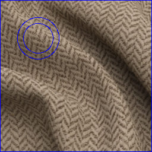 | THIS NEEDS TO BE SOLVED FOR |
| \(I^{t+1}\) | 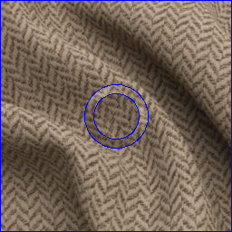 | 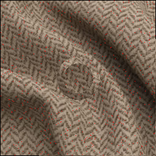 |
Here, $F$ is selected as a random normal distribution of points in 2D space. I used a knob
n_fracto control the fraction of free points we take to solve. Technically, we could solve for every free point, but that’s incredibly slow and inefficient (hence why we interpolate at the end). By usingn_frac, we can take a conveniently small fraction of points that works for larger images (512/1025/etc) with small tradeoffs in warping quality.
With these in mind we also define two convenience terms. If you were to take an arbitrary spring connecting two points ($S_{ab}$), we define $P(S_a)$ and $P(S_b)$ as the current positions of vertices $a$ and $b$ respectively.
\[\begin{aligned} P_{sa} &= P(S_a) \nonumber \\ P_{sb} &= P(S_b) \nonumber \end{aligned}\]Another important thing to note here is the nature of the spring constants. We could as per the definitions above, take $K_h$ and $K_f$ as the spring constants as is and build a matrix with this. However, defining things this way is messy for two reasons. For one, deriving the energy term (and subsequently assembling it) becomes messy. And another would be the way the force vector on a vertex changes on adding additional points since I’ll be working with zero-length spring elements. For instance take the sample grid below.
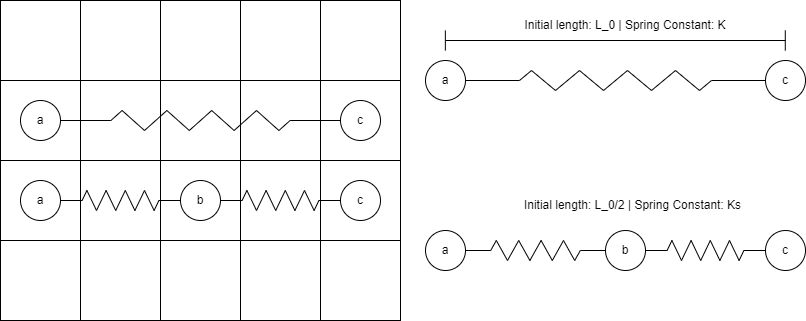 In this system an additional point $b$ is added between $a$ and $c$. If $K_s = K$ then the force on $a$ halves, which it should not.
If we were to add another point $b$ between $a$ and $c$, we end up halving the force applied on point $a$ if we assume that the constant $K$ remains the same. To ensure that $F_{new} = F_{old}$, we must do two things. One, set the initial spring lengths to 1 (zero-spring assumption) and also divide the new spring constant $K_s$ by the updated initial length of the spring.
\[\begin{aligned} F_{old} &= -K \nonumber \\ F_{new} &= -Ks*1/2 \nonumber \\ K_s &= K/(1/2) = 2K \nonumber \end{aligned}\]Thus obtaining,
\[F_{old}=F_{new}=-K\]Hence to avoid both the messy derivation later and to correctly maintain the force on a vertex, we generalize the above equation by nomalizing the spring constants by the initial distance between the vertices $l_0$.
\[\begin{aligned} l_0 &= ||P_0(S_a) - P_0(S_b)|| \nonumber \\ K_s &= \begin{cases} K_h/l_0, \text{if} \ (S_a,S_b) \in H \\ K_f/l_0, \text{otherwise} \end{cases} \nonumber \end{aligned}\]The next step involves creating the aforementioned “mesh”. We primarily use triangular elements because in 2D space, 3 points define the minimum number of points required to define an area in an image. This is later relevant for linearly interpolating the displacements for points inside each triangular element using their barycentric coordinates.
There are a number of ways in which we can create this mesh. But the simplest of them involves using an approach called Delaunay Triangulation. While this approach offers a number of benefits, few of the main perks are that it produces non-inverted, non-skinny triangles. These kinds of triangles are nice for us particularly because our approach tends to produce $C_1$ discontinuities along the boundaries between triangles during linear interpolation. Skinny triangles increase the likelyhood of these occuring and are generally far less visually pleasing.
Performing the triangulation is relatively simple. We use scipy’s spatial module to subdivide the image into triangles. One particular advantage of this (and the reason I prefer this over OpenCV’s implementation) is the convenience of being able to use scipy.spatial.Delaunay’s helper methods to get the barycentric coordinates of points inside each triangle (or simplex as per the documentation).
Applying this to the image that we had setup in the previous section, we obtain a list of triangles that make up the connections between vertices defined by $V$.
from scipy.spatial import Delaunay
# here we assume that points are defined
sc = Delaunay(points)
triangle_list = points[sc.simplices]
We can even visualize the triangular mesh. However, it does tend to look quite messy and depends quite a bit on the spacing and selection criterion for the free/constrained points.
| Image Frame | Overall Points (${C}+{F}$) | Triangulation |
|---|---|---|
| $I^{t+1}$ | 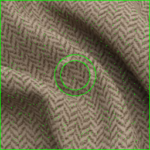 | 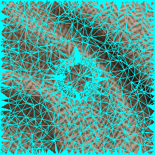 |
In this step remember to test the following two criteria to ensure you don’t end up with a bad triangulation.
- Verify that all points are inside at least 1 triangle.
- Ensure that there are no inversions in the triangle.
- Also DO NOT FORGET to seed the way the free points are picked. Otherwise you end up with slightly different triangulations every run which is not great.
To compute the energy, we begin by defining the spring constant $K_h$, $K_f$ and subsequently $K_s$. To do this, we first need to the set of all edges between vertices in the image (to define the springs in the system). We’ve already obtained the triangle_list from the previous section, and we can use a fairly strightforward trick to vectorize the process of getting all the springs.
import numpy as np
p_sa = np.concatenate(triangle_list, axis=0)
p_sb = np.concatenate(np.concatenate([triangle_list[:,-2:,:],triangle_list[:,:-2,:]], axis=1))
The first line is pretty obvious, we’re concatenating all the triplets we get from triangle_list into and $N \times 2$ vector as shown below.
In the second part, we internally rotate every triplet by one element. Then we concatenate the resulting array of triplets into a $N \times 2$ vector just as before.
\[\begin{pmatrix} V^R_j \\ V^R_k \end{pmatrix} = \begin{pmatrix} \begin{pmatrix} x_{j1} & y_{j1} \\ x_{j2} & y_{j2} \\ x_{j0} & y_{j0} \end{pmatrix} \\ \begin{pmatrix} x_{k1} & y_{k1} \\ x_{k2} & y_{k2} \\ x_{k0} & y_{k0} \end{pmatrix} \end{pmatrix} \rightarrow \begin{pmatrix} x_{j1} & y_{j1} \\ x_{j2} & y_{j2} \\ x_{j0} & y_{j0} \\ x_{k1} & y_{k1} \\ x_{k2} & y_{k2} \\ x_{k0} & y_{k0} \end{pmatrix}\]Now putting the two together and pairing them, we obtain the clockwise-oriented pairs that represent the verteces of every spring in the system.
\[(P_{sa}, P_{sb}) = \begin{pmatrix} (x_{j0},y_{j0}) & (x_{j1},y_{j1}) \\ (x_{j1} , y_{j1}) & (x_{j2} , y_{j2}) \\ (x_{j2} , y_{j2}) & (x_{j0} , y_{j0}) \\ (x_{k0} , y_{k0}) & (x_{k1} , y_{k1}) \\ (x_{k1} , y_{k1}) & (x_{k2} , y_{k2}) \\ (x_{k2} , y_{k2}) & (x_{k0} , y_{k0}) \\ \end{pmatrix}\]Now that we’ve gotten the springs, we can finally compute $l_0$ and subsequently $K_s$ for the system.
import numpy as np
def asvoid(arr):
"""
Based on http://stackoverflow.com/a/16973510/190597 (Jaime, 2013-06)
View the array as dtype np.void (bytes). The items along the last axis are
viewed as one value. This allows comparisons to be performed on the entire row.
"""
arr = np.ascontiguousarray(arr)
if np.issubdtype(arr.dtype, np.floating):
""" Care needs to be taken here since
np.array([-0.]).view(np.void) != np.array([0.]).view(np.void)
Adding 0. converts -0. to 0.
"""
arr += 0.
return arr.view(np.dtype((np.void, arr.dtype.itemsize * arr.shape[-1])))
def inNd(a, b, assume_unique=False):
a = asvoid(a)
b = asvoid(b)
return np.in1d(a, b, assume_unique)
l0 = np.linalg.norm(p_sa-p_sb,axis=1)
K_h = 10
K_f = 100
# h is the set of constrained points
sa_mask = inNd(p_sa,h)
sb_mask = inNd(p_sb,h)
sa_sb_in_constrained = np.logical_and(sa_mask, sb_mask)
# obtain Ks
Ks = np.zeros(sa_sb_in_constrained.shape)
Ks[sa_sb_in_constrained] = K_h
Ks[~sa_sb_in_constrained] = K_f
Ks=Ks/l0
Now that we’ve obtained all of this, we can compute the energy term defined by,
\[E = \sum_{s \in S} K_s ||P_{sa}-P_{sb}||^2\]In all fairness, computing the energy term here isn’t necessary. However, it does serve as a sanity check for later when we test out assembly approach. Since assembly simply refers to re-ordering the above equation before differentiating, the numerical value of the energy term $E$ must remain the same.
Assembly is the next key stage in the process. While all ominous sounding, assembly referes to idea of rearraging the energy term above into a standard form.
\[\begin{aligned}[b] E &= \sum_{s \in S} K_s ||P_{sa}-P_{sb}||^2 \\ &= d_s \times K_s \times d_s \\ &= (P_{sa}-P_{sb}) \times K_s \times (P_{sa}-P_{sb}) \\ &= P_{sa}K_sP_{sa} - P_{sa}K_sP_{sb} - P_{sa}K_sP_{sb} + P_{sb}K_sP_{sb} \\ &= v \times K \times v^T \end{aligned}\]For instance here, the process of converting the expansion of the energy term $E$ into the template of $vKv^T$ is known as assembly. While in theory this is a fairly straightforward process, implementing it in python turns out to be a pain in the neck. To begin with, implementing this as a loop ends up with the process taking over 5 minutes per image!
The process of converting the energy term into $vKv^T$ involves two parts.
While I would usually start with the first part, explaining the second part is key in understanding our objective. In the derivation above, we expanded the energy term as follows,
\[E = P_{sa}K_sP_{sa} - P_{sa}K_sP_{sb} - P_{sb}K_sP_{sa} + P_{sb}K_sP_{sb}\]What we essentailly want to do, is to re-express this into an easily differentiable form $vKv^T$. Additionally, we want $v$ and $K$ to be set up in such a way that $v$ can be seperated into a constrained vector $C$ and a free vector $F$. Similarly, $K$ should also be easily seperable into a free matrix $K_f$ and a contrained matrix $K_c$. A good way to do that is to set up the vectors/matrices as shown below. 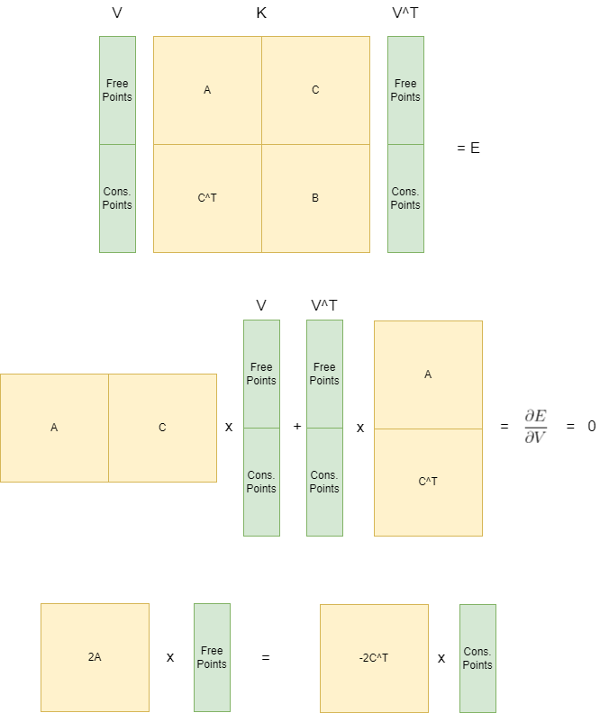
As can be seen, grouping $V$ and $K_s$ in this way allows us to easily seperate them into free and constrained parts. This makes solving for the free points easier.
So to do this, we follow the two steps that I had mentioned above. However, let’s inspect the assembly step since this step influences how we group and make the unique vector $v$. To start, assume we already have $v$; a unique set of the shape $N \times 2$ (since 2D space). What we want to do, is for each pair from the expansion of $E$, find the corresponding entry in $K_s$. To illustrate this, let’s take the first term in $P_{sa}K_sP_{sa}$.
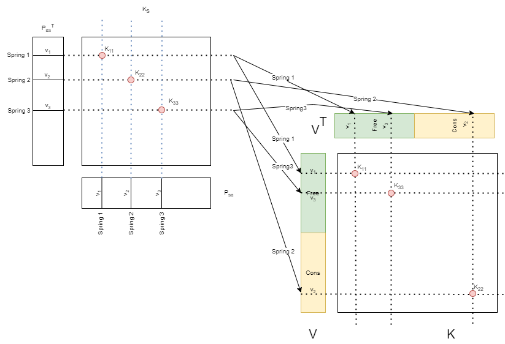 We find the corresponding positions of the spring in K by finding the index mapping between $P_{sa}$ and $v$.
The first term as can be seen above is relatively simple. Since the term is $P_{sa}K_sP_{sa}$ any spring pair that we select between $P_sa$ and itself would point to the same coordinate. Hence, if we took three springs (spring 1, spring 2 and spring 3) which correcpond to the pairings $(v_1,v_1),(v_2, v_2) and (v_3, v_3)$ respectively between $P_{sa}$ and $P_{sa}$, we can take the value corresponding to the indices of these points and find them in $K_s$. In this case, it points to $K_{11}$, $K_{33}$ and $K_{33}$.
Note that for the terms $P_{sa}K_sP_{sa}$ and $P_{sb}K_sP_{sb}$, it is infact impossible for it to index non-diagonal elements since both sides of K have the same vector.
We now take these points and copy it to the positions indexed by the same points in $v$. This is visualized by the second part of the figure, where the positions of the springs have changed (as a consequence of being grouped), and hence the places where $K_{ii}$ have been copied to have been changed as well. Note the here, it still stays on the diagonal.
A similar process is observed for the second and third terms of $E$ however. To illustrate, let’s take the second term $P_{sa}K_sP_{sb}$ for example. Since the indices of points are different between $P_{sa}$ and $P_{sb}$. Hence for spring 1,2 and 3, the points that are sample in $P_{sa}$ would be $(v_1,v_2,v_3)$. However, the points we sample from $P_{sb}$ would be $(v_4, v_5, v_6)$ and are NOT the same.
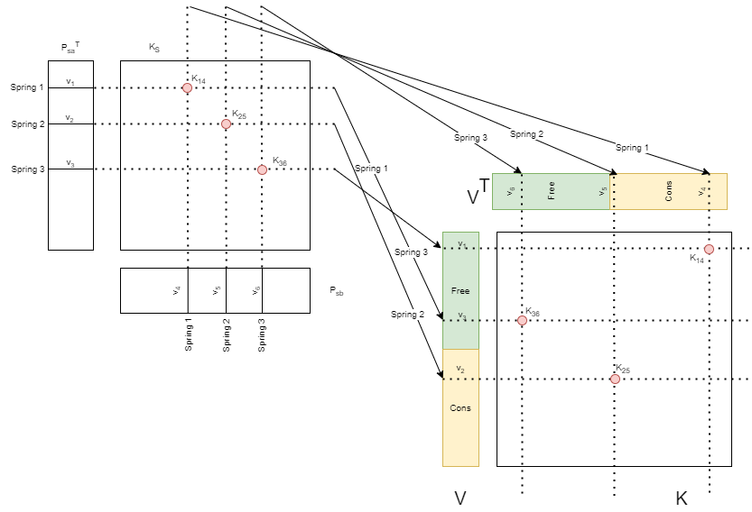
As can be seen, this begins to populate the non-diagonal elements of $K$ from $K_s$. Interestingly, the third term $P_{sb}K_sP_{sa}$ is exactly the same except the row and column indices would be flipped. Hence we also arrive at an important conclusion which will be an important sanity check later. The matrix $K$ must be symmetric along it’s major diagonal. You can see an example of that below (I most certainly did not find an excuse to add this figure because it looked like a dagger from a nostalgic era of 8-bit RPG’s).
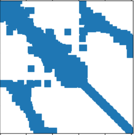
Notice that here the matrix is symmetric along it’s major diagonal. Additionally, also notice that a majority of the entries are empty (hence its sparsity).
Another important thing to note here is the sparsity of $K$. Since $P_{sa}$ and $P_{sb}$ only sample a small fraction of the points in a $H \times W$ image, the resulting points sampled in $K$ will also only be a fraction of the total dimensionality of the matrix. Hence, we will use the CSR representation to store K.
Now armed with all of this info, we can finally get some insight into how we want to group and assemble the vector $v$.
The second point is particularly important. Since CSR representation mainly focuses on the data present at a particular row and column index, storing the indices as we find unique elements and group them, allow us to optimize how the row and col vector are generated.
So in general, as far as I could tell, there were 2 ways to go about doing the first part. However do note that the logic for the first approach was annoyingly complicated and not worth it.
For the first approach we first combine $P_{sa}$ and $P_{sb}$ into a single vector. Then the combined vector (as a whole) is grouped into the independent sets. For illustrative reasons, four are used below, but in our case, we simply group into three ($F$,$H$ and $B$). When we perform the grouping operation, the order of the elements in the vector are changed. Hence, we store Original Index, which serves as a pointer to the original position of the Grouped Non-Unique vector in {P_sa}+{P_sb} (two sets concatenated not added). Once this is done np.unique is used to find the unique elements within each group.
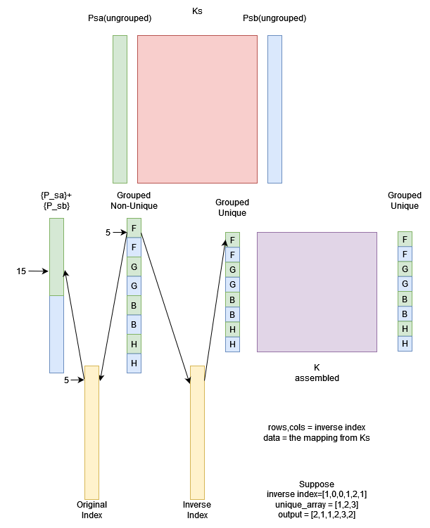 The first approach illustrated. Here $F$, $G$, $B$ and $H$ represent arbitrary independent sets of points. Of course, in our application, it would only contain $F$,$H$ and $B$.
This approach however, has a major flaw in the way the groups are formed. Since we combine $P_{sa}$ and $P_{sb}$ into a single vector, all points are repeated twice with two mappings in both Inverse Index as well as in Original Index. This ended up being a major hassle mapping back into the original vector (and subsequently $K_s$) and so was dropped.
The second approach however, is far more straightforward. We find the unique elements for both $P_{sa}$ and $P_{sb}$ independently, but only use the unique vector generated from $P_sa$. This is essentially because ${P_{sa}} = {P_{sb}}$. Since they’re equal sets, we can simply search the elements to find the pointers from np.unique(p_sb) to np.unique(p_sa).
import numpy as np
unique_vector, row = np.unique(p_sa, return_inverse=True, axis=0)
unique_vector, col = np.unique(p_sv, return_inverse=True, axis=0)
orig_indices = np.arange(0,len(mat1),1)
data = Ks[orig_indices]
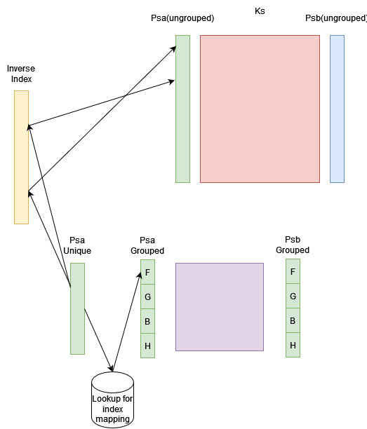
Once the unique points are found, we group it; storing the backward lookup. Once this is done, we populate $K$ using the corresponding values from $K_s$.
def group_unique_vectors(row, col, data, unique_vector, search_space_list):
groups = {
'points':[],
'row':[],
'col':[],
'data':[],
'group_length':[]
}
stacked_groups = {}
index_list_assembled = np.arange(0,unqiue_vector.shape[0],1)
# get the updated mappings for the unique indices
index_list_grouped = []
for ss in search_space_list:
mask = inNd(unique_vector, ss)
index_list_selected = index_list_assembled[mask]
index_list_grouped.append(index_list_selected)
groups['points'].append(unique_vector[mask])
groups['group_length'].append(len(unique_vector[mask]))
# create lookup for new indices
index_list_grouped = np.concatenate(index_list_grouped,axis=0)
mapping = np.zeros(index_list_grouped.shape)
mapping[index_list_grouped] = index_list_assembled
# update row and column information with updated indices
row = mapping[row].astype(int)
col = mapping[col].astype(int)
groups['row'] = row
groups['col'] = col
groups['data'] = data
# update stacked stuff
stacked_groups['stacked_points'] = np.concatenate(groups['points'], axis=0)
stacked_groups['stacked_row'] = row
stacked_groups['stacked_col'] = col
stacked_groups['stacked_data'] = data
stacked_groups['stacked_group_length'] = groups['group_length']
return groups, stacked_groups
Once the assembly has been completed, we also verify the process by testing for the following equality.
\[VKV^T = \sum_{s \in S} K_s ||P_{sa}-P_{sb}||^2\]Perhaps the easiest step in all of this is solving for the free points in the system. Once we know where we’ll move the constrained points to, our job is to solve for the new position of free points. We take the assembled matrix $vKv^T$ from above and minimize the energy in the system.
\[\begin{aligned}[b] \frac{\partial E}{\partial V} &= \frac{1}{2}K \times V = 0 \\ K \times V &= 0 \\ K_f \times F + K_c \times C &= 0 \\ K_f \times F &= -K_c \times C \end{aligned}\]Now that we have the free point positions $F$ in the above format, we can use any solver to solve for the matrix equation of the form $Ax = b$. In python, a good way to do this is to use the cg solver that scipy offers.
from scipy.sparse.linalg import cg
known_b = K_c@(C-C_init)
unknown_a = K_f
# solve for x and y
x_solved,_ = cg(unknown_a, -known_b[:,0], maxiter=200)
y_solved,_ = cg(unknown_a, -known_b[:,1], maxiter=200)
out_points = np.stack([x_solved, y_solved], axis=1)
Note that the
maxiter=200argument was set because it worked well in my particular case. You might need to play around with that to find the right number of iterations to solve for.
Now that this is done, we know where the free points have moved to. All that’s left is the barycentric interpolation to interpolate for the points we didn’t solve for.
Now that we’ve assembled the matrix and solved for the free points $F$. We come to the final part, interpolating the intermediate values. As explained before, we create the free and constrained point triangulation at time $t+1$. Then we move the constrained points $C$ to the position it was at at $t$ and ask the question, where did $F$ move? Obtaining this gives us a warpfield that points from $F^{t+1}$ to $F^{t}$, in essence telling us where to sample the pixel values for image $I^{t+1}$ from image $I^{t}$.
This results in us having the solution only at the vertices of the initial triangulation. To interpolate the pixel color values for $I^{t+1}$ at points within each triangle, we perform a piece-wise linear interpolation using the point’s barycentric coordinates.
To do this, we simply find the fractional distance between a random internal point to the vertices of the triangle. To understand this, let’s have a look at the system below. 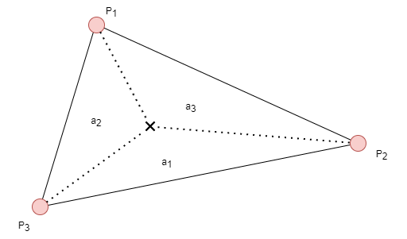
Basically, we define the fractions, $a_1$, $a_2$ and $a_3$ as the following ratios.
\[\begin{aligned}[b] a1 = \frac{\text{Area of }\Delta P_3QP_2}{\text{Area of }\Delta P_1P_2P_3} \\ a2 = \frac{\text{Area of }\Delta P_1QP_3}{\text{Area of }\Delta P_1P_2P_3} \\ a3 = \frac{\text{Area of }\Delta P_1QP_2}{\text{Area of }\Delta P_1P_2P_3} \\ \end{aligned}\]And then, the barycentric coordinates relative to the vertices would be,
\[Q = a_1P_1+a_2P_2+a_3P_3\]With this, we can interpolate the pointers on a similar way. At each of the points defined by $F$, we have a $1 \times 2$ pointer that points to a sampling pixel from the $I^t$. Hence using the above equation, we can compute the pointer the coordinates in the triangles in $I^{t+1}$ must point to.
Another way, which I prefer for neatness is to use the displacement field instead of the pointer field. The displacement field is simply the difference in value at coordinate $(i,j)$ with $(i,j)$. In essence,
\[\Delta(WF) = I^{t+1}(i,j) - (i,j)\]Then a similar interpolation operation as mentioned above can be used to compute all the values. After which to restore it to a pointer field we simply perform,
\[WF_{inter} = \Delta(WF) + (i,j)\]One particular reason I prefer this way is because it’s much easier to visualize the displacements as opposed to the pointers (which tend to look like a smooth gradient if done correctly).
| $I_t$ | Post-Interpolation I^{t+1} |
|---|---|
| 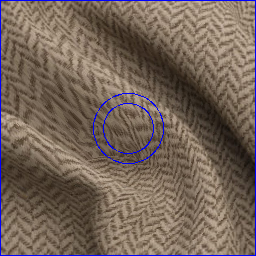 |